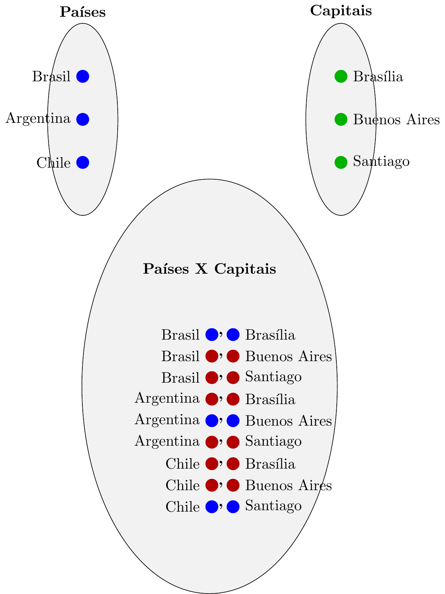
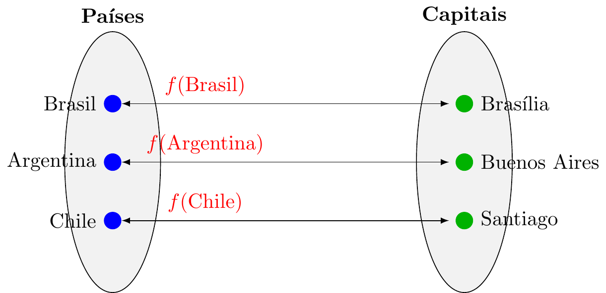
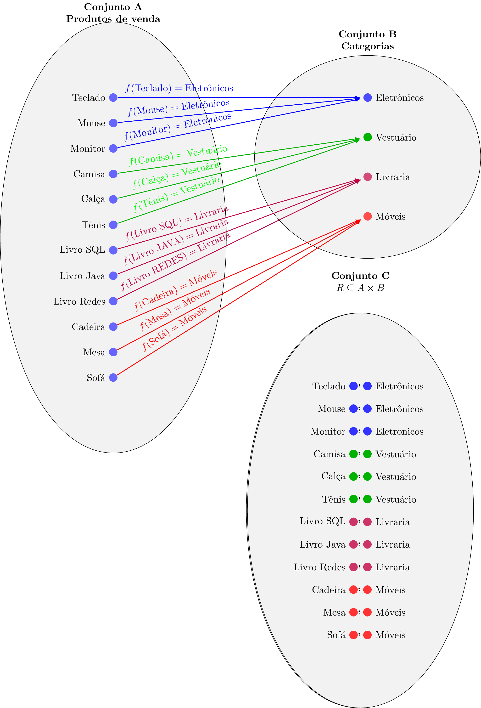

Slide 2 Fundamentos de Sistemas de Bancos de Dados
2.1 Parte I — Linha do Tempo dos SGBDs
Onde posso obter a apresentação de sildes dessa aula ?
2.1.2 Edgar F. Codd (1923–2003)

- Matemático da IBM
- 1970: Publica o artigo:
“A Relational Model of Data for Large Shared Data Banks” (Um modelo relacional de dados para grandes bancos de dados compartilhados)
Base matemática do modelo:
- Teoria dos Conjuntos
- Lógica de Predicados
- Álgebra Relacional
2.1.3 System R e SQL
- 1970–1974: Desenvolvimento do System R
- 1974: Criação da linguagem SQL
Raymond F. Boyce (SQL) |
Donald D. Chamberlin (SQL) |
|---|---|
 |
 |


2.2 Parte II — Fundamentos Matemáticos do Modelo Relacional
Agora entramos na base formal que sustenta os SGBDs.
Os conceitos a seguir estão no Capítulo 5 do livro “Fundamentos matemáticos para a ciência da computação Matemática Discreta e Suas Aplicações” da autora “Judith L. Gersting”

2.3 1. Conceito de Relação
Codd queria utilizar a Matemática, mais específicamente, a teoria de conjuntos para criar um Sistema de Banco de Dados. A Matemática trataria de garantir a consistência dos dados armazenados.
| Operação | Símbolo | Descrição |
|---|---|---|
| União | ∪ | Elementos que pertencem a A ou B |
| Interseção | ∩ | Elementos comuns a A e B |
| Diferença | − | Elementos de A que não pertencem a B |
| Produto Cartesiano | × | Conjunto de todos os pares ordenados (a,b) |
Inicialmente a idéia era associar conjuntos de dados e garantir a consistência da informação. Assim nasceu o conceito de RELAÇÃO
Sejam dois conjuntos A e B.
O produto cartesiano é:
A × B = { (a,b) | a ∈ A e b ∈ B }Uma relação R de A em B é qualquer subconjunto de A × B.
R ⊆ A × B(lembrando que o simbolo “⊆” significa “está contido em” ou “é subconjunto de”)
2.3.0.1 Exemplo 1.
Uma website vende camisetas básicas e camisetas esportivas nos tamanhos pequeno, médio e grande. Usando matemática, coloque as camisetas no conjunto A e os tamanhos no conjunto B. Utilize o produto cartesiano para gerar toda a grade de camisetas e tamanhos na página do website.

Figure 2.1: Camisetas X Tamanhos
No exemplo anterior, o conjunto C foi criado fazendo produto cartesiano de A x B. O conjunto C é uma Relação.
Contudo as operações da teoria dos conjuntos da matemática não eram suficientes para resolver algumas situações:
2.3.0.2 Exemplo 2.
Considere uma cadastro de países denominado conjunto A = {Brasil, Argentina, Chile } e um cadastro de capitais chamado conjunto B = {Brasilia, Buenos Aires, Santiago}. Verifique se é possível criar um conjunto C utilizando o produto cartesiano entre A x B, ou seja, uma Relação. Nesta relação C, cada país deve estar associado a sua capital.

Figure 2.2: Capital X Países
Verificando a operação de produto cartesiano que gerou o conjunto C produziu 9 pares ordenados. Mas para nosso contexto (associar países e suas capitais) dos 9 pares gerados, apenas 3 pares ordenados fazem sentido: C= {(Brasil, Brasilia), (Argentina, Buenos Aires), (Chile, Santiago)} ; os outros 6 pares não fazem sentido na associação de Países e Capitais.
Portanto, para este contexto, apenas a operação de produto cartesiano não atendeu os requisitos para gerar um conjunto de dados consistente a partir de dois cadastros (dois conjuntos) fornecidos.
2.3.1 A Solução vem da Matemática: FUNÇÕES como RELACIONAMENTOS:
Uma função é uma relação especial entre dois conjuntos.
Sejam ( A ) e ( B ) conjuntos.
Uma função
\(f: A \to B\)
é um subconjunto do produto cartesiano
\(f \subseteq A \times B\)
em bom português: >> Uma função f(x) é uma regra que associa cada elemento de A a exatamente um elemento de B.
As funções f(x) agem como uma filtragem para selecionar do produto cartesiano apenas os pares de elementos que fazem sentido:
As funções podem ser vistas como setas mapeando cada ponto de um conjunto no outro.
No exemplo da loja de camisetas, temos cada elemento do “conjunto A” mapeando todos os elementos do “conjunto B”. É a representação gráfica do produto cartesiano e seus pares ordenados.

Figure 2.3: camisetas X Tamanhos
No exemplo dos países e suas capitais, temos um elemento do “conjunto A” mapeando um elemento do “conjunto B”. É um subconjunto do produto cartesiano de A X B, ou seja, uma filtragem aplicada ao produto cartesiano. Na terminologia das funções, é uma função bijetora.

Figure 2.4: Países X Capitais
Conclusão de Codd: apenas as operações convencionais da teoria de conjuntos não seria suficiente para projetar sistema de banco de dados. Seria necessária a adição de elementos teoria das funções aplicada a teoria das relações.
Professor Codd cria as operações de Algebra Relacional associada a Relações.
Nasce o conceito de Banco de Dados Relacional e os conceitos que irão criar a linguagem SQL (Structured Query Language).
2.4 2. Operações Relacionais
Baseadas na Álgebra Relacional de Codd.
| Operação | Símbolo | Descrição |
|---|---|---|
| Seleção | σ | Filtra linhas |
| Projeção | π | Seleciona colunas |
| União | ∪ | Combina relações compatíveis |
| Interseção | ∩ | Elementos comuns |
| Diferença | − | Subtração |
| Produto Cartesiano | × | Combinação total |
| Junção | ⋈ | Produto + Seleção |
| Divisão | ÷ | Consulta universal |
Todas as operações Relacionais são operações SQL e serão estudadas na aula 4 (Modelagem parte 2).
2.5 3. Propriedades de Relações
Seja R ⊆ A × A.
2.5.1 3.1 Reflexiva
“Todo elemento é equivalente a si mesmo”
∀x ∈ A, (x,x) ∈ R2.5.1.1 Exemplo “Cadastro de Produtos - Popriedade”Reflexiva” da Relação:
Em um cadastro de produtos, o produto Teclado tem a mesma categoria que o produto Teclado (ele mesmo). Consequentemente, em uma tabela do Banco de Dados, o valor da coluna “CategoriaID” de um registro é sempre igual ao “CategoriaID” dele mesmo.
2.5.2 3.2 Simétrica
“Se o primeiro equivale ao segundo, então o segundo equivale ao primeiro”
Se (x,y) ∈ R então (y,x) ∈ R2.5.2.1 Exemplo: “Cadastro de Produtos - Popriedade”Simétrica” da Relação:
Se o Teclado (1) é equivalente ao Mouse (2) (ambos são da categoria Eletrônicos), então o Mouse (2) é equivalente ao Teclado (1). Consequentemente, no Banco de Dados, Teclado.CategoriaID = Mouse.CategoriaID.
Essa propriedade é utilizada para fazer “pareamento” entre tabelas.
2.5.3 3.3 Transitiva
“Se o primeiro equivale ao segundo, e o segundo equivale ao terceiro”, então primeiro equivale ao terceiro.”
Se (x,y) ∈ R e (y,z) ∈ R então (x,z) ∈ R2.5.3.1 Exemplo: “Cadastro de Produtos - Popriedade”Transitiva” da Relação:
Se Teclado (1) é equivalente ao Mouse (2) e Mouse (2) é equivalente ao Monitor (3), então obrigatoriamente Teclado (1) é equivalente ao Monitor (3), pois todos são da categoria “Eletrônicos”.
Isso garante que todos os elementos de uma categoria formem um grupo fechado e coeso.

2.6 4. Relação de Equivalência
Uma relação é de equivalência se é:
- Reflexiva
- Simétrica
- Transitiva
2.6.0.1 Exemplo: “Cadastro de Produtos -”Teste de Relação e Equivalência”:
Tenho uma tabela de produtos. Todos os produtos estão classificados em categorias. Prove nesta tabela que 2 produtos são equivalentes.
| ID (Elemento) | Nome do Produto | CategoriaID (Classe) |
| 1 | Teclado | 1 (Eletrônicos) |
| 2 | Mouse | 1 (Eletrônicos) |
| 3 | Monitor | 1 (Eletrônicos) |
| 4 | Camisa | 2 (Vestuário) |
| 5 | Calça | 2 (Vestuário) |
| 6 | Tênis | 2 (Vestuário) |
| 7 | Livro SQL | 3 (Livraria) |
| 8 | Livro Java | 3 (Livraria) |
| 9 | Livro Redes | 3 (Livraria) |
| 10 | Cadeira | 4 (Móveis) |
| 11 | Mesa | 4 (Móveis) |
| 12 | Sofá | 4 (Móveis) |
2.6.0.1.1 Resolução:
“Dois produtos são equivalentes se pertencerem à mesma categoria.”
“Dois produtos não são equivalentes se pertencerem a categorias diferentes.”
Para provar isso, é preciso testar as 3 propriedades de relações (Reflexiva, Simétrica e Transitiva) em relação ao ponto comum entre eles, que é no caso “categoria”.
Tomarei como exemplo “Cadeira, Mesa, Sofá”. Analisarei segundo a caracteristica comum “categoria”:
Reflexiva - Cadeira é da mesma categoria que cadeira ? Sim - OK
Simétrica - Cadeira é da mesma categoria que mesa e Mesa é da mesma categoria que Cadeira ? Sim - OK
Transitiva - Cadeira é da mesma categoria que mesa; Mesa é da mesma categira que sofá; portanto cadeira é da mesma categoria que sofá ? Sim - OK
Considerando que cadeira, mesa e sofá atendem as propriedades “Reflexiva”, “Simétrica” e “Transitiva”, então “Cadeira, Mesa, Sofá” constituem a mesma classe de equivalencia.
2.6.1 Classes de Equivalência
Dada relação ~ em A:
A classe de equivalência de x é:
[x] = { y ∈ A | y ~ x }Exemplo em uma relação de Banco de Dados formada pelo conjunto A Produtos e pelo conjunto B Categorias:
R ⊆ A × B :

Figure 2.5: Produtos X Categorias
Chamamos de Classes de Equivalência todas as relações de equivalência que se formam dentro da Relação.
São as “panelinhas” que se formam dentro do conjunto.
No nosso exemplo temas as seguintes Classes de Equivalência:
| Classe | Categoria | Pares Ordenados |
|---|---|---|
| 1 | Eletrônicos | 1. (Teclado, Eletrônicos) 2. (Mouse, Eletrônicos) 3. (Monitor, Eletrônicos) |
| 2 | Vestuário | 1. (Camisa, Vestuário) 2. (Calça, Vestuário) 3. (Tênis, Vestuário) |
| 3 | Livraria | 1. (Livro SQL, Livraria) 2. (Livro Java, Livraria) 3. (Livro Redes, Livraria) |
| 4 | Móveis | 1. (Cadeira, Móveis) 2. (Mesa, Móveis) 3. (Sofá, Móveis) |
Observações importantes:
1-As classes são disjuntas; 2-A união das quatro classes é exatamente a relação $ R $; 3-Cada par ordenado pertence a uma única classe;
2.7 5. Dependências Funcionais
São os atributos de uma relação (colunas de uma tabela) cujos valores determinam os valores de outras colunas.
Exemplo: Imagine a Relação (Tabela) chamada CursoProgramacao.
| ID_Aluno | Nome_Aluno | Cod_Curso | Nome_Curso | ID_Instrutor | Nota_Final |
|---|---|---|---|---|---|
| 10 | Alan Turing | SQL-01 | Banco de Dados | 500 | 9.5 |
| 20 | Ada Lovelace | PY-02 | Python Avançado | 600 | 10.0 |
| 10 | Alan Turing | PY-02 | Python Avançado | 600 | 8.0 |
| 30 | Grace Hopper | SQL-01 | Banco de Dados | 500 | 9.0 |
| 40 | Linus Torvalds | JS-03 | JavaScript | 700 | 7.5 |
Considere as seguintes Regras de Negócio
Cada aluno tem apenas um nome oficial.
Cada código de curso pertence a apenas um nome de curso.
Cada curso é ministrado por apenas um instrutor específico (um instrutor não muda de curso).
Um aluno pode fazer vários cursos, e terá uma nota diferente para cada um.
Tendo estas informações identifique as DEPENDÊNCIAS FUNCIONAIS dos atributos da tabela.
Quais são os atributos da tabela?
| ID_Aluno | Nome_Aluno | Cod_Curso | Nome_Curso | ID_Instrutor | Nota_Final |
|---|---|---|---|---|---|
- Quais destes atributos o valor identificam unicamente o valor de outro atributo?
| Atributo1 | Dependência Funcional | Atributo2 | Resultado |
|---|---|---|---|
| ID_Aluno | determina | Nome_Aluno | ? |
| Cod_Curso | determina | Nome_Curso | ? |
| Cod_Curso | determina | ID_Instrutor | ? |
| ID_Aluno | determina | Nota_Final | ? |
- Qual é a combinação de colunas necessária para determinar a Nota_Final?
2.7.1 Resolução
- Quais destes atributos o valor identificam unicamente o valor de outro atributo?
| Atributo1 | Dependência Funcional | Atributo2 | Resultado | Comentário |
|---|---|---|---|---|
| ID_Aluno | determina | Nome_Aluno | SIM | ID_Aluno valendo “10” determina Nome_Aluno “Alan Turing” |
| Cod_Curso | determina | Nome_Curso | SIM | Cod_Curso valendo “SQL-01” determina Nome_Curso “Banco de Dados” |
| Cod_Curso | determina | ID_Instrutor | SIM | Pela regra de negócio #3, Cod_Curso determina ID_Instrutor. Aqui temos um caso especial de Dependência Parcial |
| ID_Aluno | determina | Nota_Final | NÃO | Olhe o Alan Turing (ID 10). Ele tem nota 9.5 e nota 8.0. ID_Aluno sozinho não determina a nota do aluno. |
- Qual é a combinação de colunas necessária para determinar a Nota_Final?
Eu preciso saber QUEM (Aluno) e em QUAL MATÉRIA (Curso) para te dar a nota exata. A combinação dos atributos {ID_Aluno, Cod_Curso} determinam Nota_Final! Esta é um caso de Dependência Total.
2.8 6. Conceito de Fecho
Dado conjunto de atributos X e conjunto de dependências funcionais F:
O fecho de X (X⁺) é o conjunto de todos os atributos funcionalmente determinados por X.
Exemplo:
Dependências:
A → B
B → CEntão:
A⁺ = {A, B, C}2.9 Conexão Final — A Base Matemática do SGBD
| Conceito Matemático | Aplicação em BD |
|---|---|
| Relação | Tabela |
| Produto cartesiano | Combinação de domínios |
| Relação de equivalência | Particionamento por chave |
| Fecho | Descoberta de dependências |
| Transitiva | Análise de dependências |
| Antissimétrica | Ordem parcial |
| Álgebra relacional | SQL |